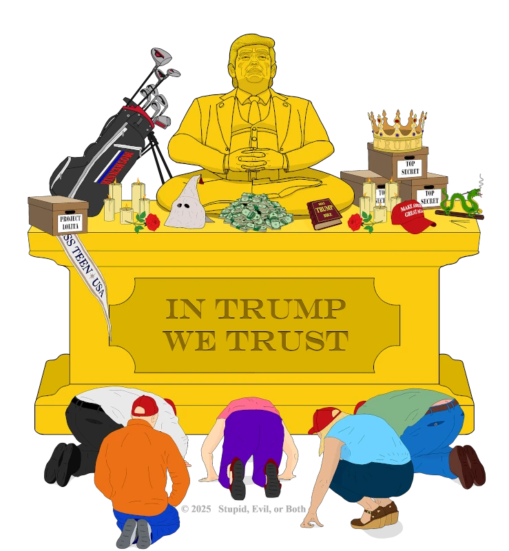
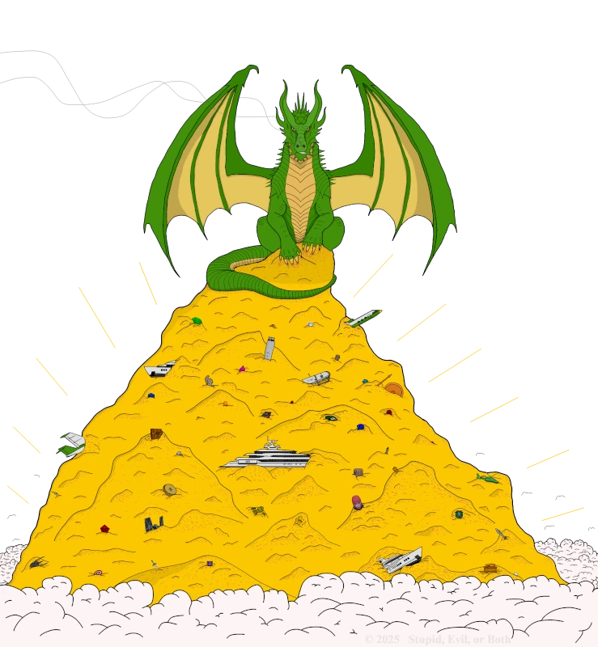
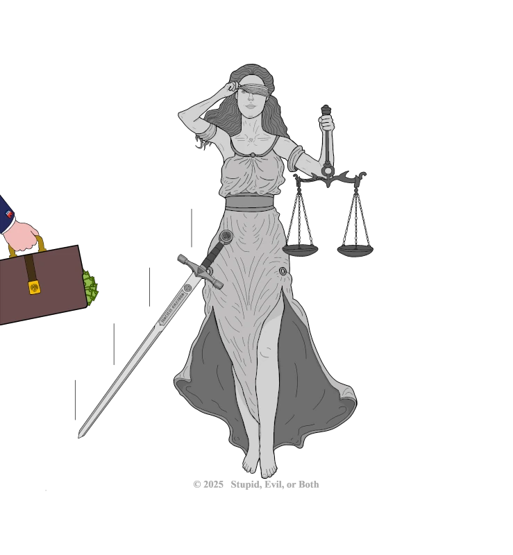

Stupid, Evil, or Both TEST 1
A Collection of
Rants
Art
FULL COVER ART
OUR VOTE

DONALD J. TRUMP
CAPITALISM

TAXES
HEALTHCARE
EDUCATION
THE ENVIRONMENT
BIGOTRY

JUSTICE
RELIGION
FINAL RANT
It's a pretty big image...
×
✕